ReferenceResult
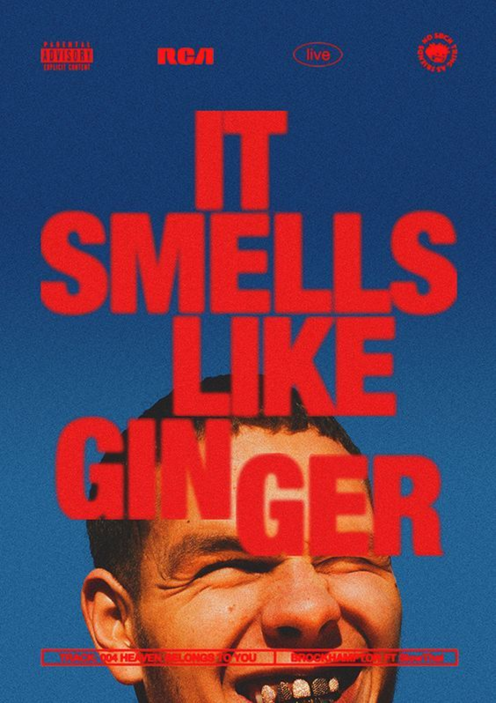
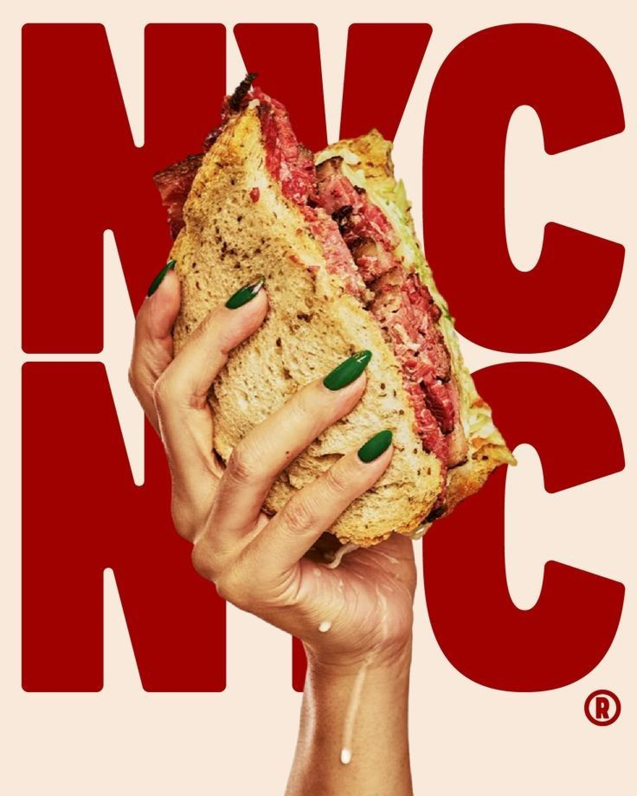
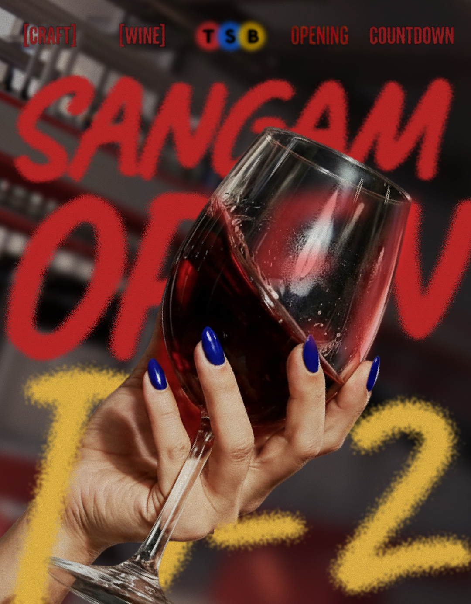
상암점 오픈 예정 카드뉴스
강한 타이포그래피와 와인 잔 이미지를 조합해 신규 지점 오픈 소식을 한눈에 읽히게 구성했습니다.
아침엔 커피 한 잔, 저녁엔 와인 한 잔. 와인을 어렵게 설명하기보다 카페처럼 가볍게 즐기는 순간으로 보여주는 와인&푸드 라이프스타일 브랜드입니다.
와인을 직접 따라 마시는 경험. 간단한 행위로 여러 가지 와인을 저렴한 가격으로 한 잔씩 마셔볼 수 있습니다.
와인을 고르고 구매하는 공간. 매장에서 경험한 취향을 집으로 이어갈 수 있습니다.
음식, 공연, 분위기를 즐기는 공간. 와인을 중심으로 사람과 장면이 모이는 경험을 만듭니다.
| 브랜드 설명 | 탭샵바는 TAP이라는 간단한 행위로 여러 가지 와인을 저렴한 가격으로 한 잔씩 마셔볼 수 있는 개성을 가진 브랜드입니다. 어려운 와인 지식보다 직접 따라 마시고, 고르고, 즐기는 경험을 먼저 보여줍니다. |
| 브랜드가 원하는 것 | 와인을 특별한 날의 소비가 아니라 일상적인 취향 소비로 느끼게 만들고, 매장 방문으로 이어지는 친근한 브랜드 무드를 만드는 것. |
| 콘텐츠 미션 | 기존 무드보드를 유지하면서 상암점 오픈, 프로모션, 시음회, 러닝 협업, 공연 후 방문 맥락을 인스타그램 콘텐츠로 쉽게 전달하는 것. |
| 내가 한 일 | 인스타그램 콘텐츠 제작, 상암점 촬영, 추카추카추 유튜브 콘텐츠 제작, 추카추카추 썸네일 템플릿화, 러너블 콘텐츠 썸네일 변경, 상단 고정 게시물 썸네일 변경 제안, 음식 스타일링컷 기획까지 담당했습니다. |
상암점 촬영과 추카추카추 유튜브 콘텐츠를 제작해 “많은 연예인들도 탭샵바를 찾는다”는 인식을 높이고, 썸네일 템플릿화로 반복 가능한 콘텐츠 포맷을 만들었습니다.
러너블 콘텐츠 썸네일을 AI를 활용해 인스타그램 무드에 맞게 바꾸고, 상단 고정 게시물 썸네일 변경과 음식 스타일링컷 기획을 제안했습니다.
탭샵바가 어떤 브랜드인지 먼저 설명하고, 그다음 AI가 어디에 쓰였는지 보여줍니다.
무드, 메뉴, 공간을 콘텐츠화해 “와인을 가볍게 즐기는 곳”이라는 인식을 만듭니다.
AI에게 맡긴 사람이 아니라, 브랜드 문맥을 정리하고 결과물을 판단한 기획자 역할을 드러냅니다.
브랜드 상황, 매장 맥락, 전달해야 할 내용을 ChatGPT에 먼저 주입해 콘텐츠 방향을 함께 정리했습니다.
Pinterest와 Instagram에서 찾을 검색어를 AI와 만들고, 레퍼런스를 무드/구도/카피 구조로 분해했습니다.
레퍼런스 기반 프롬프트를 제작해 FLOW에서 이미지 시안을 만들고, 팀이 바로 이해할 수 있는 시각 자료로 공유했습니다.
릴스는 스토리 구성, 이미지 제작, 영상화 순서로 실험했습니다. 촬영 없이 어려웠던 아이디어를 먼저 움직이는 형태로 확인했습니다.
| 작업 | Before | After | 의미 |
|---|---|---|---|
| 기획 및 리서치 | 약 4시간 | 약 2시간 | 아이디어 출발점을 빠르게 만들고, 회의에서 논의할 방향을 좁혔습니다. |
| 배너·썸네일 방향성 | 반나절 ~ 1일 | 약 2~3시간 | 말로 설명하던 이미지를 시각화해 팀의 이해 속도를 높였습니다. |
| 릴스 콘티·카피 초안 | 약 1시간 | 약 20분 | 스토리 구조와 카피를 먼저 세워 영상 제작 가능성을 빠르게 판단했습니다. |
AI를 활용하며 확실히 도움을 받은 지점
기획 및 리서치 / 아이디어를 생각하는 데 확실한 도움이 됐습니다. 촬영 없이 불가능했던 콘텐츠를 가능하게 만든다는 점에서도 도움이 컸습니다. 그리고 내가 생각한 아이디어를 모두와 공유해야 하는 경우, AI로 시각화할 수 있어 팀 전체의 이해를 확실히 돕는다는 점이 가장 큰 장점이었습니다.
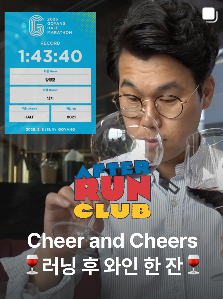
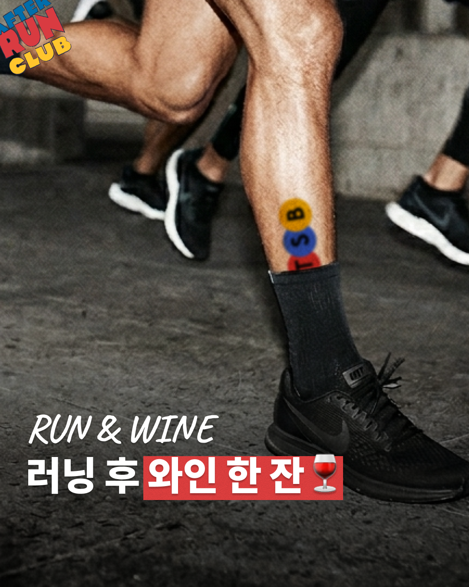
기존 썸네일은 출연자와 러닝 기록 정보가 먼저 보여 탭샵바의 브랜드 무드가 약하게 전달됐습니다. 변경안은 러닝 순간의 에너지와 와인이라는 목적을 한 장면에 묶어, 협업 콘텐츠가 인스타그램 피드 안에서도 탭샵바다운 톤으로 보이게 만든 사례입니다.



강한 타이포그래피와 와인 잔 이미지를 조합해 신규 지점 오픈 소식을 한눈에 읽히게 구성했습니다.
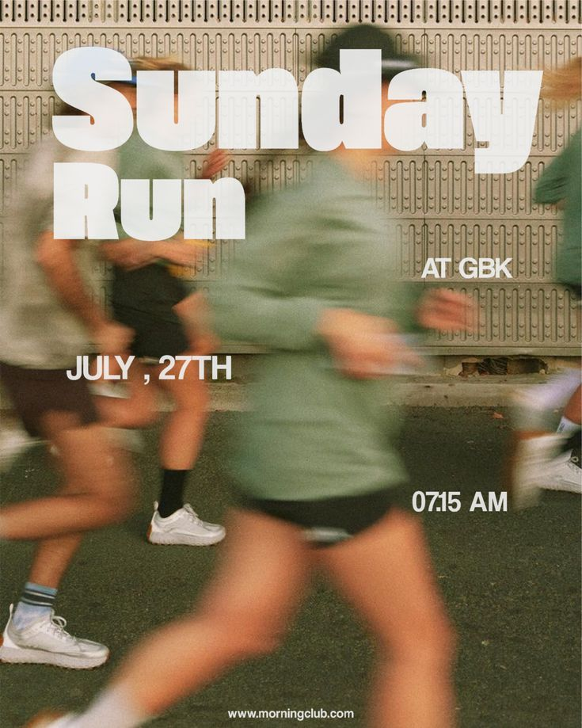
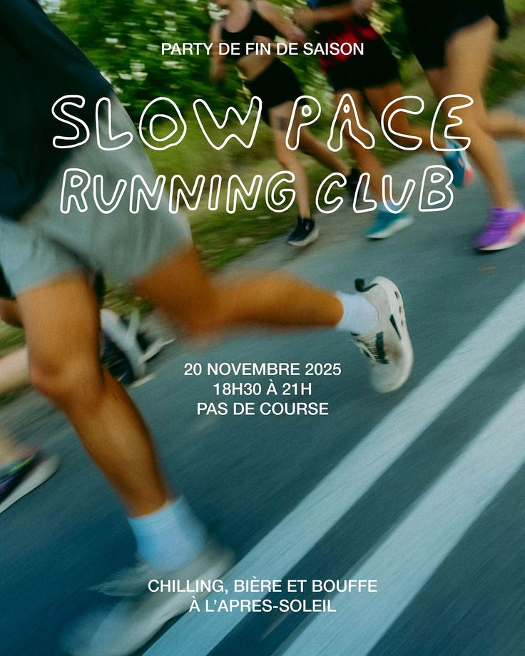
기존 썸네일을 탭샵바 인스타그램 무드에 맞는 톤으로 바꾸고, 러닝 협업의 맥락이 더 바로 보이도록 제안했습니다.
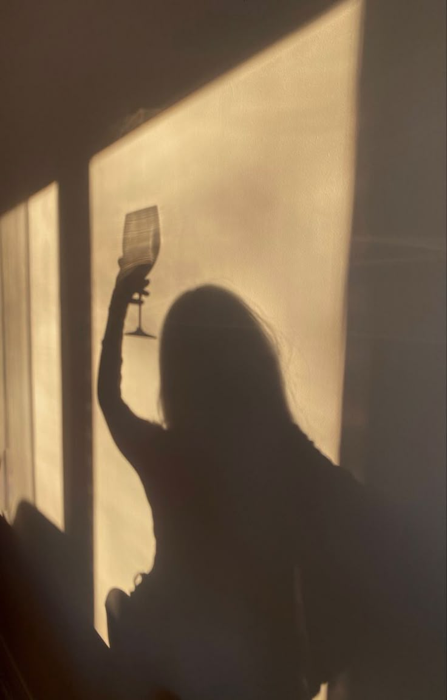
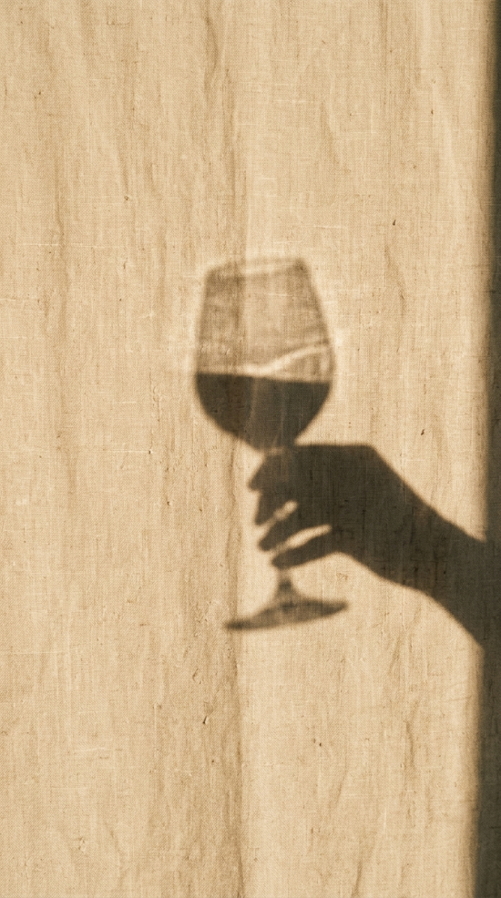
와인 한 잔의 그림자와 질감을 활용해 행사 정보를 직접 설명하기 전 분위기를 먼저 설계했습니다.
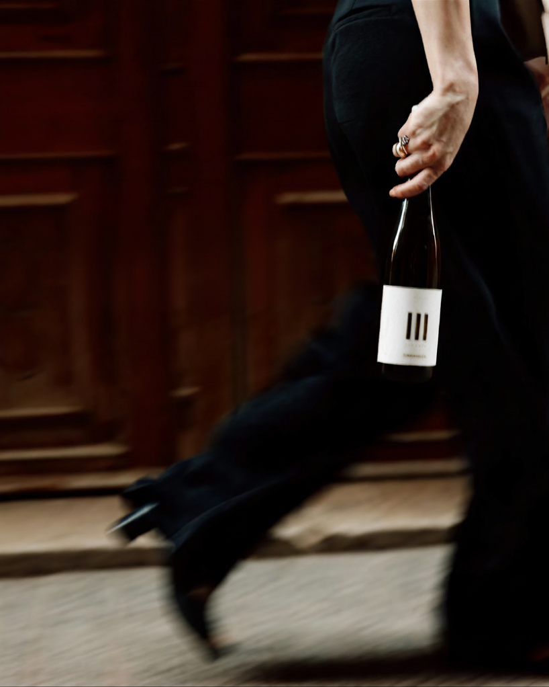
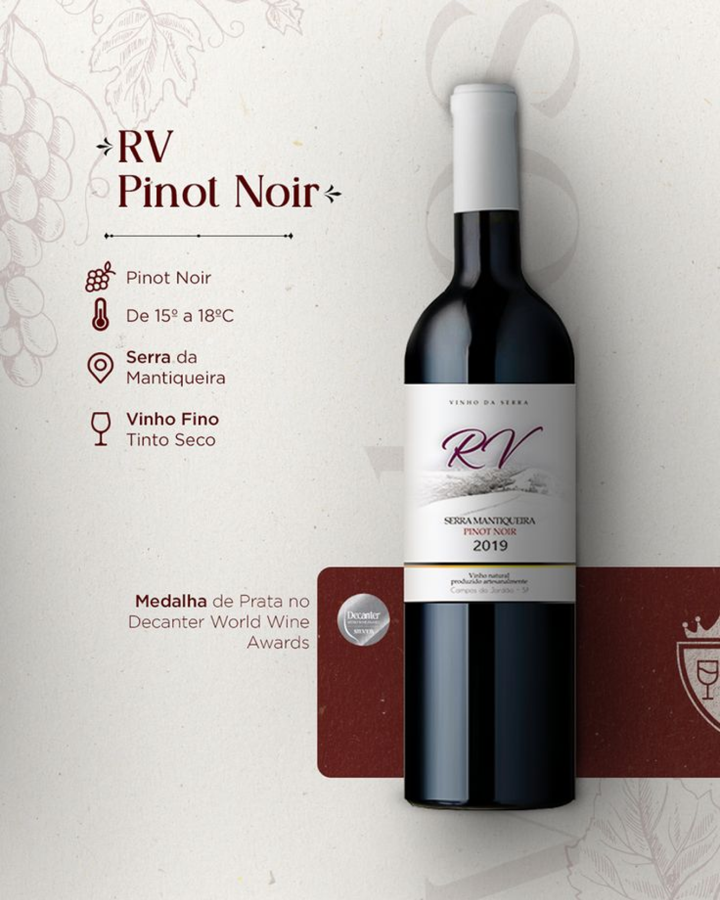
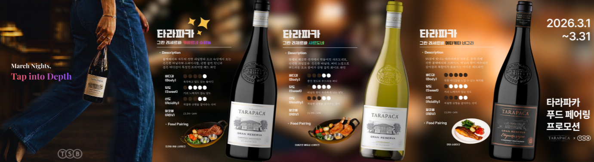
제품 정보만 나열하지 않고, 와인이 놓이는 상황과 분위기를 함께 보여주는 방향으로 전환했습니다.
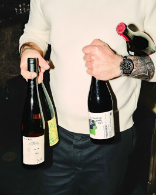
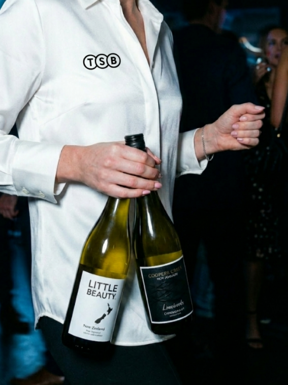
제품을 들고 있는 손, 옷, 병 라벨의 디테일을 살려 프로모션 콘텐츠가 브랜드 무드 안에서 보이도록 구성했습니다.
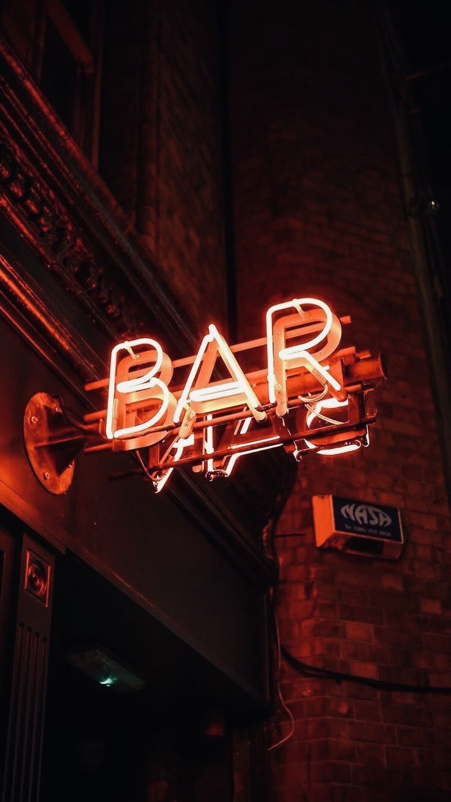
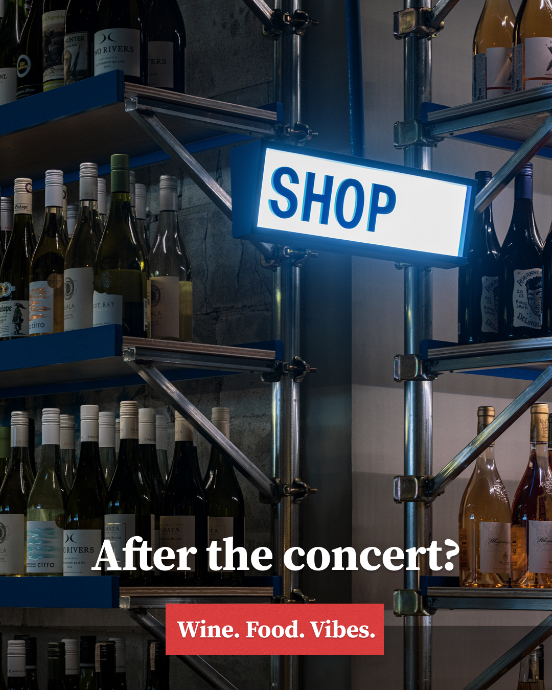
공연 후 방문 맥락을 잡고, 외국인 타겟에게 탭샵바를 자연스럽게 제안하는 릴스 콘텐츠로 제작했습니다.
좋은 레퍼런스를 찾기 위해서는 이미지, 영상, 릴스 등을 많이 보고, 보면서도 내가 맡고 있는 브랜드에 어떻게 응용하고 적용할 수 있을까를 계속 생각하는 것이 중요합니다.
피드백의 “레퍼런스가 중요하다가 추상적이다”라는 지점을 반영해, 발표에서는 어떤 레퍼런스를 왜 골랐고 어떤 요소를 결과물에 반영했는지까지 설명합니다.
단순히 예쁜 이미지를 저장하는 것이 아니라, 왜 이 앵글을 썼는지, 왜 이 배경과 조명을 선택했는지, 이 방식을 탭샵바 음식 스타일링컷이나 릴스에 어떻게 적용할 수 있을지까지 생각하며 찾아야 합니다.